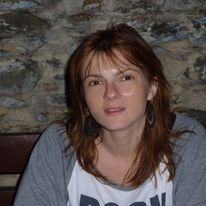

Niečo o mne
Toto som ja :)
Pochádzam z Bratislavy. S vývojom stránok mám veľmi vzdialenú skúsenosť.
V práci som administrátor intranetovskej časti nášho oddelenia.
Kedysi sa to robilo cez tkz. Typo3, teraz cez Share Point.
Medzi moje záľuby patrí otužovanie

Zdroj obrazka: